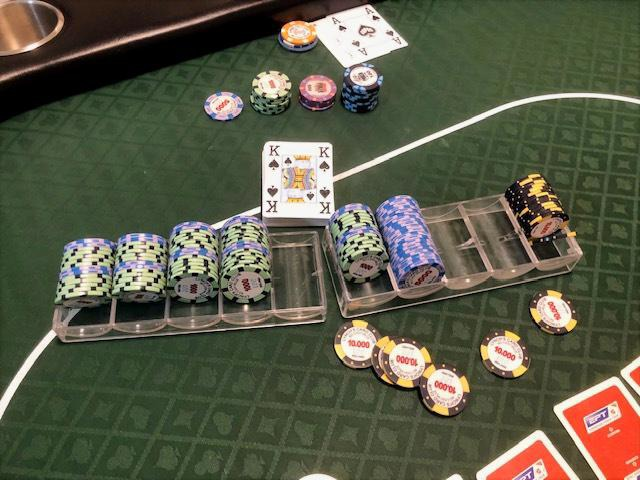
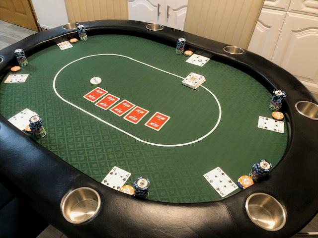
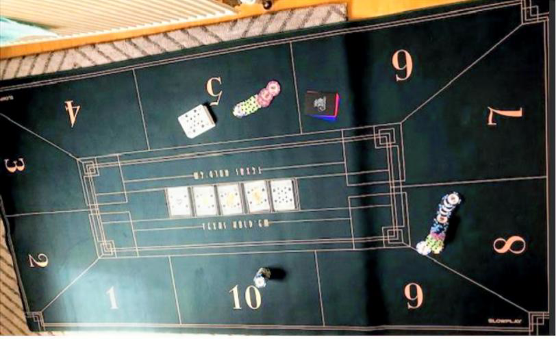
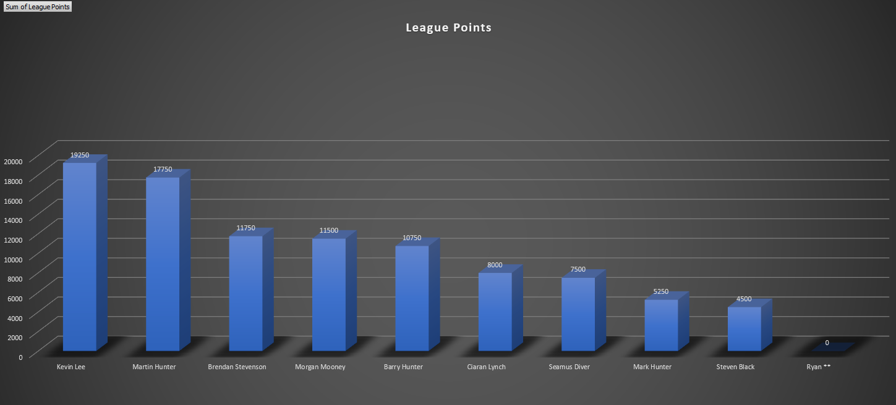
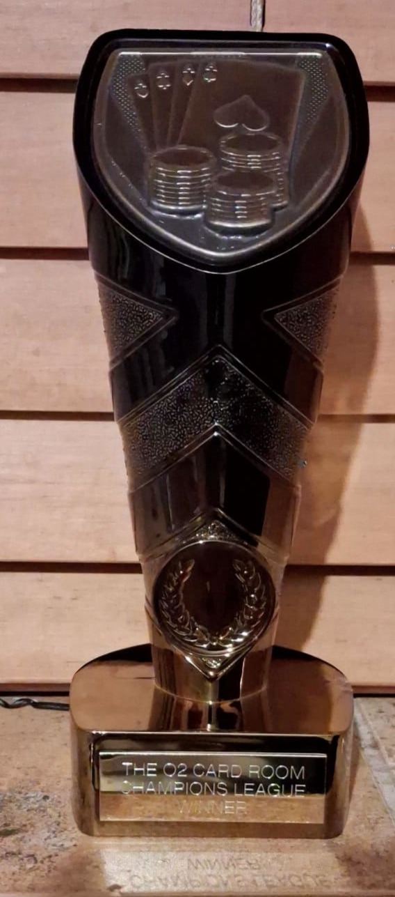
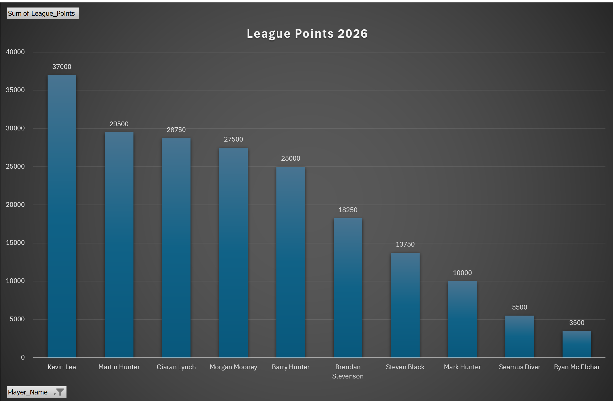
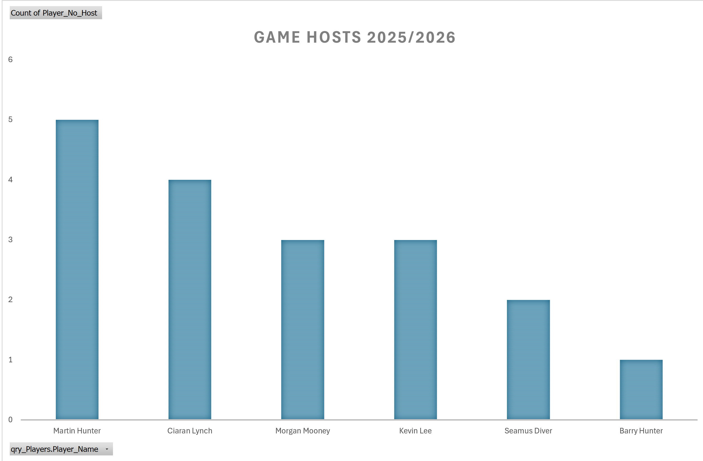
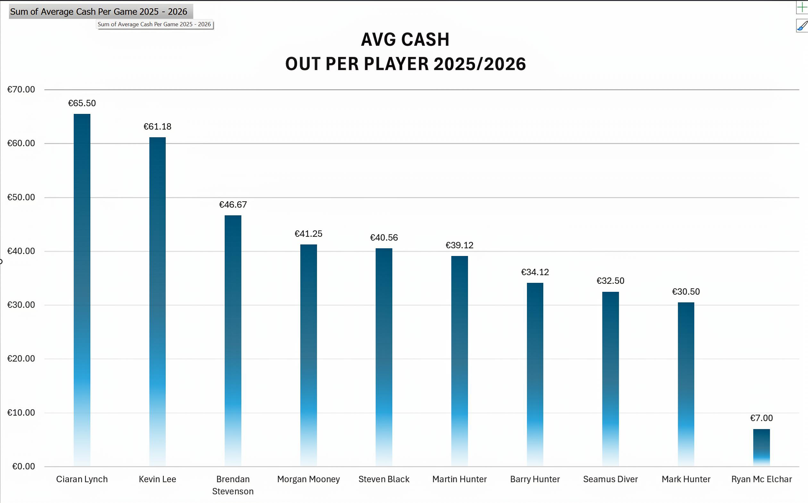
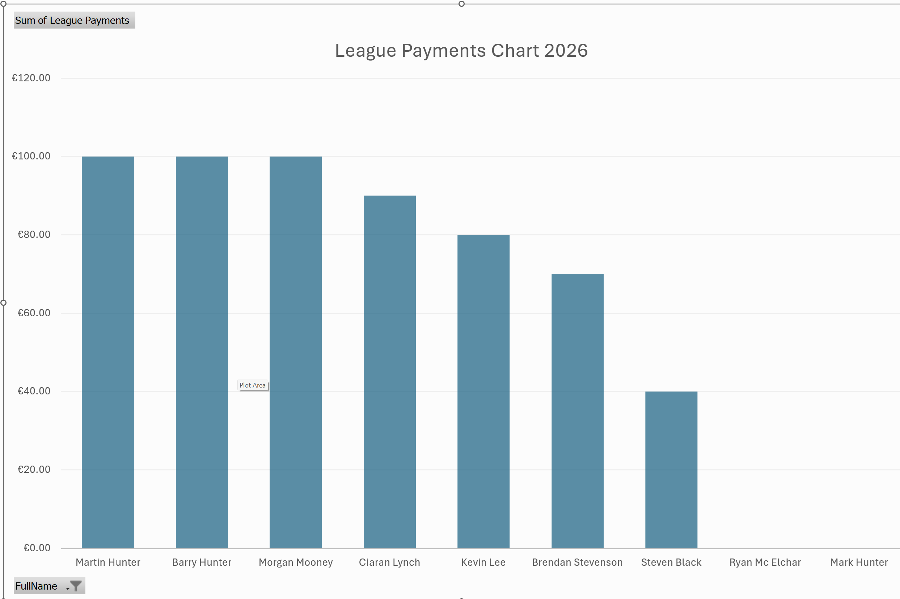

Introduction
The 2002 Cardroom — Where Legends are made fo fall
- Event Manager: Martin Hunter
- Tournament Director: Ciaran Lynch
The 2002 Cardroom hosts exclusive, home‑based poker events in plush surroundings across the Letterkenny area.
Games are strictly invite‑only. Some of the OG players have been gathering since 2002 — over 23 years of cards, craic, and questionable decisions.
League Ethos
Competitive poker, a few beers, a bit of craic, dramatic rebuys, and the occasional Bollywood bluff.
“We strive for excellence… and world class poker commentary.” — Martin



Game Structure
Nightly Tournament Structure
The tournament is played over 6 levels:
- Levels 1–5: 30 minutes each
- Level 6: 45 minutes
- 25‑minute break after Level 3
- 15‑minute break after Level 5
Buy‑in: €30
Starting stack: 30,000 chips (15,000 + free 15,000 add‑on)
Rebuy / Top-Up: €20 = 20,000 chips
Max 1 per game, must be used before the end of Level 5.
End of Level 6
- Chips ÷ 1000 = cash‑out amount
- Chips × 50 = league points
Hosts & Schedule
The tournament proposed dates:
- Event 1 : 2 January 2026 - Host: Barry
- Event 2 : 23 January 2026 - Host: Ciaran
- Event 3 : 13 February 2026 - Host: Martin
- Event 4 : 6 March 2026 - Host: Morgan
- Event 5 : 3 April 2026 - Host: Ciaran
- Event 6 : 24 April 2026 - Host: Martin
- Event 7 : 22 May 2026 - Host: TBC
- Event 8 : 19 June 2026 - Host: TBC
- Event 9 : 17 July 2026 - Host: TBC
- Event 10 : 14 August 2026 - Host: TBC
- Event 11 : 11 September 2026 - Host: TBC
- Event 12 : 16 October 2026 - Host: TBC
- Event 13 : 6 November 2026 - Host: TBC
- Event 14 : 4 December 2026 - Host: TBC
- Champions League Final will be on December 2026, Date TBC - Host: TBC
Players
2025 Season Blog
Highlights of Opening Night — 24 January 2025... A Storm is brewing...
Storm Éowyn wasn’t enough to put off six brave poker players.
As Éowyn turned half the town dark, Martin told his better half, "The cold and dark could do us some harm, so i'm off somewhere warm, for a few beers and a bit of a laugh".
Unfortunately, two squad players — Brendan and Steven — still have morals!
As usual, Morgan arrived just in time for the first break.. Harumph.. Seeing Pocket 5s four times with a bit of glee, he held up three — but his 99 and QQ fell to the sword, when Kevin Lee called the board.
Hard to beat Kevin’s 7-2 off suit, as usual on the river stealing all the loot...Harumph..
The River Lee was in full flow, not a rebuy in sight — until he made the Director's night.
As the night drew to a close, counting his stack, he raised three times, with his pocket 88 pack.
Undetterred by the reraise move, Kevin jumps into the groove, to steal the show with an all-in throw.
Sadly for him, Lynch throws KK onto the felt, Lee's Poker stack soon did melt.
So shocked was I from Lee's play, that I collapsed on the chair, doing more damage than Éowyn today.
Bollywood bluffs were the star of the show, as his nut farts did blow on moving his hip, he still had to use his orange rebuy chip.
A poker of 6s kept alive the Bollywood gaze, until he sheepishly folded to a K4 river Diver raise.
Who raised six times the big blind with pocket 10s and got called by 8-5 offsuit and looses all his loot? Our events manager. Unbelievable, Jeff!
Man Of The Match... The massive ROI play from Lynch and the smashing of the place, stole the show on the night
Season Conclusion — 2025
The 2025 League has officially come to a close, a year of the odd dumb-ass play and the usual drunk comment arose.
Martin couldnt keep the momentum up and as his hands faded from lifting the Cup.
With a final night of Bollywood nut farts and Kevin Lee chasing a flush of hearts.
Brendan attacked the table with his mighty full house, sure he can't loose, only for Captain Morgan to demolish his mica bricks, with the poker of two's.
After months going all-in like at an all-inclusive buffet, Kevin Lee emerged as the 2025 Champ without delay, as he hopes Arsenal follows his lead into May.
How could the Events Manager allow such multiple illegal rebuys!
Thanks to the Event Manager and Champions League qualifier, Martin — ROI Champion!
Player Results — 2025
Leaderboard — 2025
Season Conclusion — 19th December 2025
The 2002 Cardroom League for 2025 has officially come to a close...Congrats to Champions League Winner.... Kevin Lee
Stayed tuned for more excitement for 2026 season...
League Points

2026 Season Blog — League Overview & New Format
The 2026 season kicks off on Friday, 2nd January 2026, bringing a refreshed league structure, stricter rules, and a brand‑new competitive format. This year also introduces the optional Champions League Final, giving players a high‑stakes finale to aim for.
Highlights of League Opening Night — 2 January 2026... Winter is Coming...
Attendance: 8 players — beer count: medium.
Another cold start to January, with the snow falling we were losing a few, Brendan said a big No to Carlow! and joined the warm crew.
As usual, Morgan arrived just in time... Harumph... and went on a demolition with great Derby Pride, as Lynch's bets got taken for a ride.
The River Lee, not content with a League Title in 2025, ended the night on top, showing Lynch that J7 is much better than AJ on the flop.
Young Ryan, finally seeing a properly run game, was here to see his manager and mentor, Barry "Bollywood" by name. Looking for the thrill of seeing Barry's legendary gaze and world class poker skill. They say you should never meet your hero, as his awe slowly faded, like Barry's poor show. But as Barry eloquently told him — "numb, mumb, blumb, mmm river, but but buts"... following a mouthful of his favourite nuts.
Young Mark made another appearance, finding the going tough on those dodgy flops, as he was continually outplayed by Hunter pops,in the end he was glad to sit and watch the darts, just far enough away from uncle's farts.
So the Event Manager, keen to impress his young kin, watched his chips crash down, like his bunker in Berlin.
Man Of The Match... Solid performance, with a tinge of luck, the award goes to Kevin.
Highlight of Event 2 — 23 January 2026... The Night of the Sage...
Attendance: 7 players — beer count: high.
You just had to be there! Classic magic, monster hands as rare as a Morgan fold, and world‑class poker commentary was the tale to be told.
As usual, J7 tortured the Director, this time from the Derby brigade. Lynch was driven to despair when his AQ witnessed J7 again hit two pair.
With the usual chuckle and a Moretti in hand, out he calls, "Fair Enough! i know your on the bluff", Nada Mas, Nada Mas, Lynch had enough.
Although Morgan's calls he could not stop, the Mooney chips soon faded, like his new Blondie top.
The River Lee will forget this one, certainly not making his top 10 hits as his zero points ended his night in pits.
When Kevin and Morgan play like Podge and Rodge, you know it's time to get out of Dodge.
Young Ryan called in sick, still devastated by mentor Barry "Bollywood's" last event — his love for Poker had taking a dent
Mark had a tough night defending attack after attack, against the drunk bully Mr Black.
Steven's courage did appear, after sinking the odd Polish beer and his trip Kings giving cause for a cheer!
But Mark did smile and tease "A full house beats trips with ease"... Taxi for Mr Black please.
Still, after the usual Morgan tax bill, Steven was crowned the King of the Hill.
He dazzled all with magic card show, bringing awe and delight to Kevin's poor night, helping him forget his terrible low.
But the best card show of the night was presented by Captain Morgan, with great delight.
As the board did show 9, 10, J of hearts...Barry's own heart felt a bit of a rush, as Morgan throws up.. Yep — a straight flush!!
BUT WAIT — THERE'S MORE
Just when you thought Middle Earth was all magical and nice, this one was worth more the entry price, for our victor was treated to some sage advice.
Up steps the Event Manager, Gandalf like he did tread — "You should have bet, cause you were probably ahead"
Yes folks, in a heads‑up showdown, a straight flush has a good chance of taking the crown.
This is poker commentary at its best. Poker strategy books will be put to the test.
BUT WAIT — THERE'S MORE
With the Polish beer sinking in and a few before up "in the bin", it's time for Steven to push all‑in.
It was a Barry raise and just in time for the Bollywood gaze... tick tock, tick tock... Just when you thought our poker knowledge had learned enough, Barry announced — "You have either a good hand or it's a bluff."
This new poker book writes itself
- Chapter 1 — A Full House beats trip Kings
- Chapter 2 — A Straight Flush on the river is possibly the best hand heads‑up
- Chapter 3 — An all‑in on the river is either a good hand or it isn't
Congrats to Steven for a top recovery, and Morgan's straight flush moving him into pole position in the Champions League.
Man Of The Match... tough one between Morgan's Straight Flush and Steven for a marvelous chip assumption. But Steven edges it, especially for his Beer consumption
Highlight of Event 3 — 13 February 2026... The Night of Bromance...
Attendance: 7 players — beer count: low.
A slow start to a frosty night, but cupid was in the air as the early straddle was the usual fair.
Kevin did min raise with 2 & 6, to catch some bait and as usual hit the straight
Lynch was caught between Morgan and Mr Black, noticing Steven's romantic glance at Morgans rack, but they both enjoyed taking ciaran's stack.
His night turned into a bit of a balls, 8 times the BB raise, gets 6 calls.
Steven's night started a bit of a lull, until his pocket J's made his face less dull. Ace on the flop made his heart stop, but alas, the JJ on the board, was just pure class and Morgans chips took a bit of a cull
Barry was back from his exotic trip, but no nuts tonight, so nothing did rip.
His early play was doing more harming than his Indian curry in Puerto Del Carmen.
But Barry discovered a issue for all to see, he said " Your computer stats are picking on me. They look all flashy and nifty, but they are only multiplying my cash out by fifty"...
The night got tough when each raise was met with, "Fair enough, I know your on the bluff".
Morgan's our poker puriest, he see's more hands than a manicurist.
All bluffs are put down when the puriest is in town.
Jack five, Seven Three, he will fight your bluffs with courage and glee.
Martin was left sitting like a mouse, when Morgan's 73 hit the Full House
Martin was left to wonder and moan, as his chips disappeared quicker than a Credit Union loan.
What has happened to the 2025 ROI king, as he's near the bottom of the league, lingering...
Man Of The Match... Great comeback from Barry, the main man, his chips having more colour than his farmers tan
Highlight of Event 4 — 6 March 2026... A Spring in the step...
Attendance: 8 players — beer count: good.
Welcome back Brendan, international mystery man, crossing dangerous borders is his plan.
No fears of cambodia jet lag, sure he got a cheap hand bag.
Where next for our travel man, maybe Iran or a beer run to Asda... in Strabane.
Morgan the host, found the going tough, by the first break had little chips to boast.
When you AK hand hits the flop 2 pair, but the chips move elsewhere, you know it's a night of despair.
Add on and rebuy by the first break, but a Full House gave him a respectable take.
Lynch looks down and sees QQ in his hands they did hide, a big raise and Kevin and brendan come along for the ride.
All-in by the river, Brendan says "Yep, i'll beat this half-wit" and throws up QQ for a pot to be split.
The Event Manager, finally awakens to the spring from his winter low, and joins the league with a much better show.
A few Heineken beers for a bit of dutch courage, but folding 10's to a Lynch bet, put him in a rage.
Mr Lee got his usual 30,000 chips, to watch Lynch's stack take mighty dips.
Trip Q's for Lynch but Q,9,10 on the board, no way Lee could have Jack Eight, of course as usual, he hit the straight
The mentor had it tough as the night kicked off, it's one of those things, when 2 Aces walk straight into trip kings.
When the chips got low an all-in bluff, helped him cash out with barely enough.
But the apprentice had a night to forget as his stack was slowly crying, not even bollywood was Saving Private Ryan.
The quiet assassin, Mark was having a night well played, showing pops, how in poker, to get paid.
Man Of The Match... Morgan Mooney...Excellent resurgence from the Host, going late into the night, Keeping Mr Lee in his sight.
Highlight of Event 5 — 3 April 2026... A Very good Friday, for some...
Attendance: 8 players — beer count: tut tut, on our lords day.
Back at the Director's headquarters for event number five, a few beers in the Glencar Bin, to help Martin's dutch courage come alive.
Level one and it all kicked off, Lynch's 8 times the BB, respect there was none. So up steps Steven to show how it's done,
14 Big Blinds for all to see, taking the Pot with ease and glee.
Morgan and Kevin having a terrible start and not a sign of a Bollywood fart.
They had used the Add-On chip as their stack had taken a mighty dip. Martin and Steven had caused their drop, but it turned out to be a short pit stop.
Are the league leaders feeling the stress, or is this the usual credit union loan process.
As Steven looks down and sees two pair, he brings kevin to more despair.
He puts him all-in on the turn, to stay alive Kevin needs an Eight, ten to one dog, of course he hits the straight!
Steven's chips look at him with a Jilt and his night goes on a terrible Tilt.
Well not to worry as we have a new dealer coming in, Martin steps up, his beer buddy, from up in the Bin.
Pocket AA's he sends his way, this will ressurect Mr Black's day.
He gets ready for a big pot to steal...Oh Wait!! Martin just made a bum deal!
Well Martins face went pale and meek, from the cursing and swearing, on holy week.
Steven's night did crash and burn, since putting Lee all-in, on the turn.
"This is a terrible night for me", he did decree, the worst Good Friday since 33 AD.
By the first break, the dutch courage had served Martin well. His stack had taken a swell.
As his chips stacked up, he was having a smile and a laugh and as they say in Bingo..."Two and a half"...wtf..
But after the break he had a feeling something wasn't right, not sure why he came here tonight. He had kev the clown to the left and morgan the joker to the right.
It was hard to keep the smile on his face, as kev rivered the house against his straight, he was losing control all over the place.
When Kevin and Morgan look at their league position with admiration, they should remember Steven and Martin's charitable organisation and their Good Friday austentatious donation.
A tough night for Diver and Black, leaving early without a league stack.
Congrats to Barry and Brendan fighting back well for a break even, and not exploding like Steven.
Man Of The Match... Martin Hunter edges Steven's Full Tilt antics...Excellent Bingo quotes, great card dealing, quality drinking, Bollwood impersonation, stuck in the middle of clowns and jokers and not a sign of frustration...
Highlight of Event 6 — 24 April 2026... Barry HellMouth...
Attendance: 7 players — beer count: good.
The Event Manager stepped up to host event six, and master the table with his poker tricks.
Private Ryan made a play early doors, only to be flooded by river Lee's house of fours
The apprentice can't get a break, pots won are none, time for Barry to show how it's done
Not to worry young man, Raise with Pocket 6's is Barry's plan. But Lee calls, cause he's a bit thran..
"I will call a raise with a Jack and Five, sure you know my hand is alive"
What european idiot would call the Masters big raise, can he handle the Bollywood gaze?
A big pot was brewing, available to horde, when 5,5,4 hit the board.
For the master pushes all in, given Kevin a smile and a grin.
Was Phill Helmuth invited tonight? cause the cursing and swearing was heard all night.
A 6 on the river did avert a heart attack, with barry eventually taking the stack.
The ungentlemanly conduct was heard throughout Bomany, handed out by the Donegal Referee
"It's not Poker to call with Jack and five, I could never do that, you see!", Barry did decree. Oh Wait!! Did you not win with a Jack and three??
But Brendan stepped up to put Lee in his place, putting trip 8's down, showing a flush with style and grace
Mark's night turned a bit low A,10 all in called by the diver, showing pocket 6's for a heads up show
"Sixes are flopping all night", turns out he was right, to seamy's delight.
Man Of The Match... Martin edges Barry's Helmuth antics...Great Host and powerful Cash out, moving up the league, finally...
2026 Mid-Season Update — The Story So Far..
The 2026 Cardroom season has already delivered more drama than a Bollywood double-bill, and we’re only halfway through. With monster hands, sage like wisdom, and enough beer-fuelled commentary to fill a trilogy, it’s shaping up to be a classic run in.
And at the top of the mountain — for now — stands Kevin Lee, the man who’s turned consistency into an art form. Meanwhile, at the other end of the table, young Ryan is still trying to remember why he signed up for this league in the first place.
Let’s take a look at how the season is unfolding.
The Leader: Kevin Lee — is cruising after event 5, with a strong lead and big favourite. It helps when you are hitting Rivers that would make Diver blush
While Barry and Martin are busy writing new chapters of The Book of Terrible Poker Advice, Kevin has quietly stacked chips like a man at an all-inclusive resort
Event 2 wasn’t his finest hour — At least Steven treated him to a magic show — but he’s still the one to beat. If he keeps getting Martin's kind donations, the trophy might as well start engraving itself.
The Struggler: Ryan — The Kid Who Called in Sick
Ryan, still traumatised by Barry “Bollywoods” poker masterclass, the young apprentice hasn’t found his feet yet.
He missed Event 2 entirely — “sick,” apparently — though rumours suggest emotional damage was the real diagnosis.
There’s talent there, if he would stop listening to Barry. But right now, he’s running colder than Lynch’s AQ on a J7 board.
Mid-Season Highlights (So Far)
The Night of the Sage — Event 2..
- Monster hands rarer than a Morgan fold
- J7 tormenting Lynch like it has a personal vendetta
- Steven’s trip Kings getting schooled by Mark’s full house
- Martin unveiling poker wisdom so profound it deserves its own Netflix special
- And of course… Morgan’s straight flush, delivered with the grace of a man holding a pint of Moretti
The Sage Advice Heard Around the Poker World
“You should have bet, cause you were probably ahead.”
A line so iconic it deserves to be carved into the Cardroom trophy base.
The New Poker Book (Work in Progress)
- Chapter 1 — A Full House beats trip Kings
- Chapter 2 — A Straight Flush is sometimes good heads-up
- Chapter 3 — An all-in is either a good hand or it isn’t
Storylines to Watch
Can Kevin stay on top
He's getting more donations than a charity shop
What's Ryan Recovery intention
Every season needs a comeback story. This one might need divine intervention.
Will Steven recover from his Tilt
Event 5 has left scars that that require vengence, that won't wilt.
Will Brendan settle in from his latest travel
A late surge from Stevenson is on the cards as he quietly stacks his chips after only 3 events attended, sitting nicely for a late surge to unravel.
Will Barry Add More Chapters to his Strategy Poker Book?
We can only hope to sneak a look...
Will the Event Manager continue to deal
A few beers on the night, theres a chance of a steal
The Road Ahead
With the trophy now proudly displayed on the site, the stakes are hotting up. Every point matters an every beer increases the odds of someone saying something immortal.
If the first half of 2026 is anything to go by, the second half is stacking up to be a cracker
Champions League Format
The Champions League entry fee is €100 per player, spread across the year (typically €10 over 10 nights). We aim to play 12 - 14 league games, with each player’s best 10 performances counting towards their final league points.
These points become your starting stack in the end‑of‑year Champions League Tournament, which is free to enter for all paid‑up players.
A night must have at least 6 players to count as a league event
Any player who cannot play the full 10 games may pay the balance due to make up 10 games. Their chips allocated per €10 paid, will be 1,000
Champions League Payout Structure
Based on 9 Players and a pot of €900.
- Overall League Winner – 15% = Approx €135
- Tournament Champions League Final Winner – 25% Approx €225
- Tournament 2nd Place – 15% Approx €135
- Tournament 3rd Place – 12% Approx €108
- Tournament 4th Place – 8% Approx €72
- Tournament 5th Place – 7% Approx €63
- Tournament 6th Place – 6% Approx €54
- Tournament 7th Place – 5% Approx €45
- Tournament 8th Place – 4% Approx €36
- Tournament 9th Place – 3% Approx €27
- Note: Any paid up player with less than 10,000 chips earned during the league, will begin the final with a minimum stack of 10,000.

Player Results — 2026
Leaderboard — 2026
League Points 2026

Game Hosts for 2025 - 2026

Average Cash Out Per Player for 2025 - 2026

Champions League Payments 2026

Season Conclusion — 2026
Season summary will appear here.